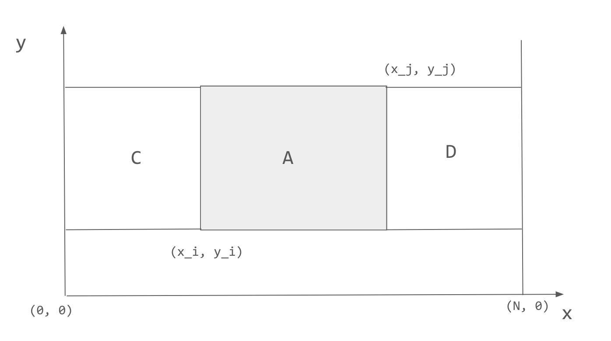

There are 3 types eligible rectangles
For rectangles enclose two or more cows, we can count based on each pair of cows \((x_i, y_i)\) and \((x_j, y_j)\).

They can enclose a rectangle area \(A\), we can count the number of distinct rectangles that
The answer is related to number of cows in area C and D, i.e.
\[ rect\_count(C) \times rect\_count(D) \]
Now we can use 2D prefix sum to compute number of cows in \(C\) and \(D\).
The overall time complexity is \(O(N^2)\).
#include <bits/stdc++.h>
using namespace std;
using LL = long long;
struct Point {
int x;
int y;
};
bool sort_by_x(const Point &p1, const Point &p2) {
return p1.x < p2.x;
}
bool sort_by_y(const Point &p1, const Point &p2) {
return p1.y < p2.y;
}
int N;
vector<Point> points;
vector<vector<int>> P;
int rect_count(int x1, int y1, int x2, int y2) {
return P[x2][y2] - P[x1 - 1][y2] - P[x2][y1 - 1] + P[x1 - 1][y1 - 1];
}
int main() {
cin >> N;
points.resize(N + 1);
for (int i = 1; i <= N; ++i) cin >> points[i].x >> points[i].y;
// To compress the x and y to [1, N] for easy prefix sum computation.
sort(points.begin(), points.end(), sort_by_x);
for (int i = 1; i <= N; ++i) points[i].x = i;
sort(points.begin(), points.end(), sort_by_y);
for (int i = 1; i <= N; ++i) points[i].y = i;
P.resize(N + 1);
P.assign(N + 1, vector<int>(N + 1));
for (int i = 1; i <= N; ++i) P[points[i].x][points[i].y] = 1;
for (int x = 1; x <= N; ++x) {
for (int y = 1; y <= N; ++y) {
P[x][y] += (P[x - 1][y] + P[x][y - 1] - P[x - 1][y - 1]);
}
}
LL result = 0;
for (int i = 1; i <= N; ++i) {
for (int j = i + 1; j <= N; ++j) {
int C = rect_count(1, i, min(points[i].x, points[j].x), j);
int D = rect_count(max(points[i].x, points[j].x), i, N, j);
result += C * D;
}
}
cout << result + 1 + N << "\n";
return 0;
}